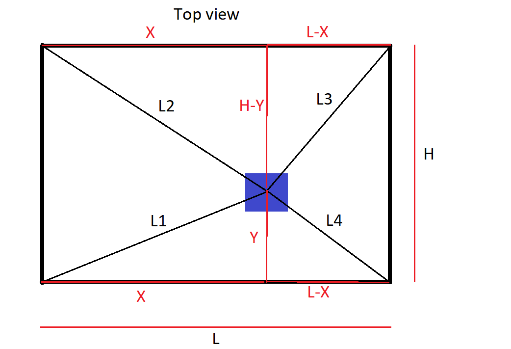

Project Overview
This project explored how a minimal hardware system—just cables, motors, and a controller—could achieve precise motion in three-dimensional space. Designed as a clean-room alternative to traditional gantry systems, this robot suspended a toolhead using four cables, calculating exact cable lengths in real time to position the toolhead accurately within the workspace. The concept had to be simple, elegant, and mechanically robust—every calculation and component had to deliver.
My Role
I executed every phase of the project from concept to completion. I modeled the structure in SolidWorks, derived the motion control equations from first principles, built the hardware, and programmed the firmware on Arduino. I also designed a remote-control interface using an IR receiver, allowing full 3D navigation at the press of a button. This wasn’t just a technical exercise—it was a chance to prove that thoughtful engineering could make simple materials achieve complex motion.
Engineering Challenges and Breakthroughs
- Derived inverse kinematics using 3D Pythagorean relationships to calculate real-time cable lengths based on Cartesian coordinates
- Invented a custom "slope method" algorithm to interpolate step timing across motors, allowing simultaneous and smooth movement without desynchronization
- Designed robust boundary checking logic to prevent collisions and ensure safe movement within the workspace volume
- Integrated IR-based control system and wrote Arduino code to interpret directional and Z-axis commands from a standard remote
- Designed an efficient wiring and power distribution system to simultaneously power logic (5V) and stepper drivers (9V) from a single benchtop source
Results
The finished platform achieved a positional resolution of 0.01178 mm—finer than a human hair—and maintained that precision consistently across a cubic workspace approximately 300mm per side. The system was tested through repeated motion sequences including edge travel and diagonal paths, and retained accurate return-to-position capability. The success of this project proved the feasibility of a purely cable-driven positioning system with no mechanical guides or rails. It stood out as one of the most technically complete and creatively executed projects in the course.

Tools & Technologies Used
- SolidWorks (full frame and cable path modeling)
- Arduino (firmware and IR control logic)
- IR Receiver Module and Remote Input Programming
- Mathematical modeling for cable kinematics and motor step calculation
- Custom wiring layout for voltage regulation and signal routing